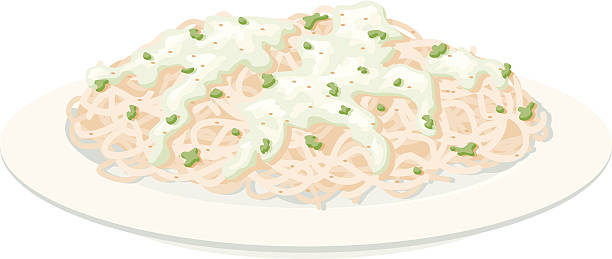

The perfect dish for your spicy senorita!
This is a quick and painless dinner idea for your date night!
Ingredients
- Alfredo Noodles
- Heavy Whipping Cream
- Butter
- Minced Garlic
- Parmesan Cheese
- Salt & Pepper
Recipe instructions
- Warm up your butter and cream in a large sauce pan over low heat
- After simmering for 2 minutes, whisk in garlic and seasonings
- Whisk constantly or one minute to allow garlic to cook
-
Add your parmesan cheese and stir until cheese has melted and sauce is
smooth
-
Boil Alfredo noodles to your liking and add to large sauce pan with a
tablespoon of pasta water to help thicken up your sauce
Return to top
Return to main page